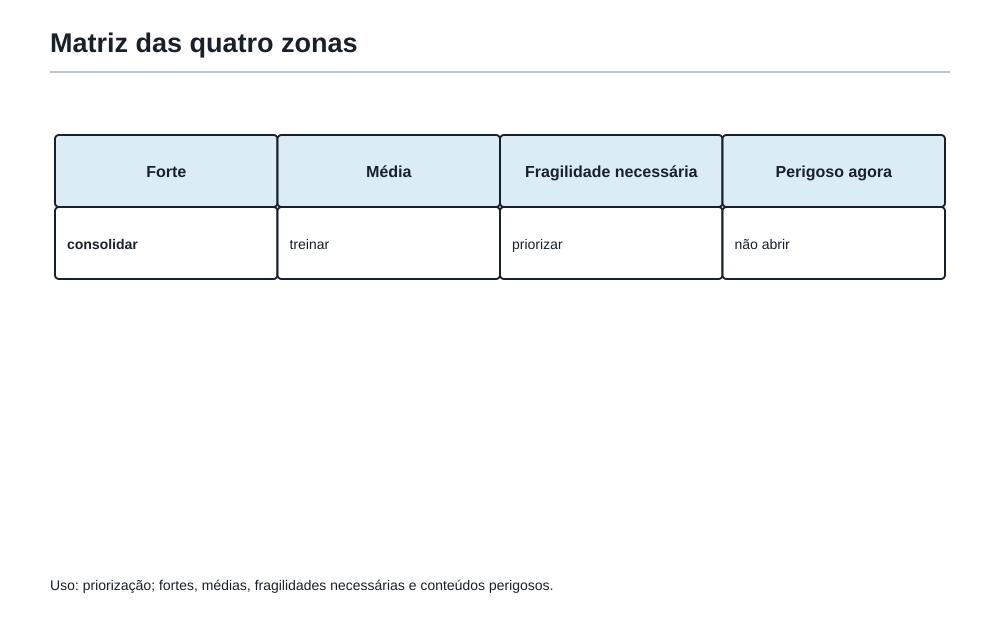
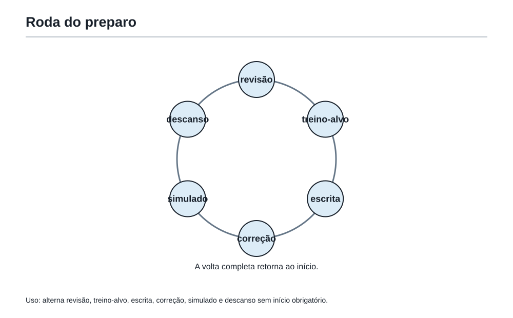
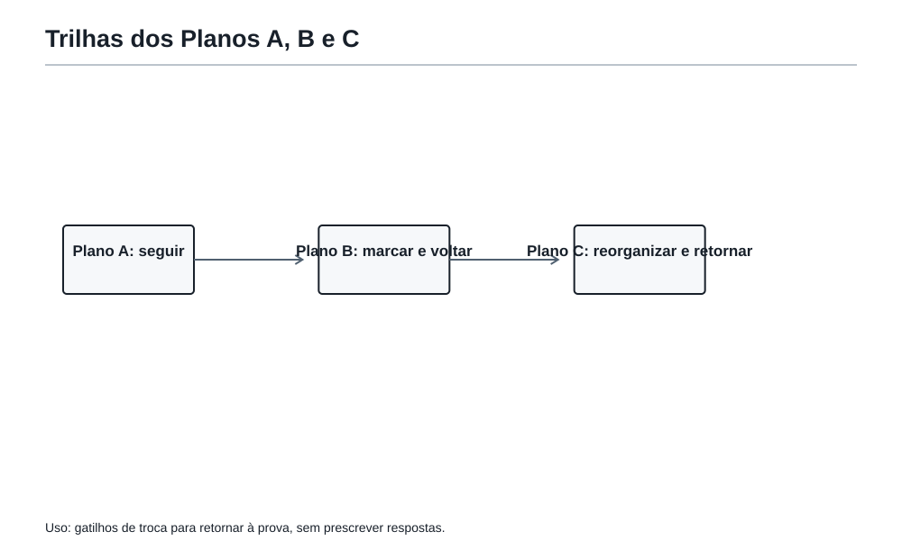

A reta final
1. A porta depois da confirmacao
Felipe fechou o caderno depois do simulado de confirmacao. Havia respostas certas, uma resposta que precisava de explicacao melhor e dois problemas aos quais ele voltaria de outro jeito.
O Professor da Academia nao perguntou quantas ele tinha acertado.
Perguntou:
"Agora que voce tem pistas de verdade, o que vale a pena fazer com os dias que restam?"
Essa e a pergunta da reta final.
Reta final nao e hora de recomeçar o livro inteiro. Tambem nao e hora de tentar aprender tudo que ainda parece grande. E o momento de escolher bem: conservar o que ja funciona, fortalecer o que pode melhorar e preparar uma resposta simples para os pontos que ainda assustam.
O Matematico Invisivel deixou uma observacao no quadro:
"Medo faz listas enormes. Evidencia faz planos pequenos."
Uma evidencia pode vir de uma prova, de um mini-simulado, de uma solucao escrita ou de uma reconstrução feita sem olhar. Ela responde perguntas concretas:
- reconheci rapidamente um problema de restos?
- consegui explicar por que subtrai os caminhos proibidos?
- soube circular e voltar a uma questao?
- usei o ultimo tempo para revisar, ou fiquei preso numa unica porta?
Essas respostas valem mais do que a frase vaga "acho que sou ruim nisso".
2. O mapa honesto da Mochila
Antes de decidir o que estudar, Felipe nao precisa dar uma nota para cada capitulo. Precisa desenhar um mapa honesto das ferramentas que leva para a prova.
| Zona | O que significa | Decisao na reta final |
|---|---|---|
| Ferramenta forte | Voce reconhece a ideia, usa-a e consegue explicar. | Manter viva com revisoes curtas. |
| Ponto medio | A ideia aparece, mas demora, falha em enunciado misto ou precisa de ajuda. | E o melhor lugar para ganhar terreno. |
| Fragilidade necessaria | Pode aparecer na prova e ainda trava voce. | Criar uma versao de emergencia. |
| Conteudo perigoso agora | Exigiria abrir um assunto grande, raro ou ainda sem base. | Nao transformar em prioridade de ultima hora. |
Esse mapa nao e uma etiqueta para sempre. "Ponto medio" nao quer dizer incapacidade. Quer dizer: ha uma ponte curta e util daqui ate uma resposta melhor.
Por exemplo:
- Felipe reconhece MMC em problemas de sinos e reencontros, mas as vezes esquece de interpretar a pergunta. Isso e ponto medio, nao motivo para abandonar MMC.
- Ele percebe facilmente uma area de retangulo, mas se confunde quando ha faixa, buraco ou sobreposicao. A ferramenta basica e forte; a leitura de figuras compostas pode ser o ponto medio.
- Se um tipo muito raro de problema exigir uma tecnica que nunca foi estudada, abrir essa tecnica na vespera pode ser conteudo perigoso. A melhor defesa pode ser ler com calma, fazer um caso pequeno e escrever o que ja se sabe.

A pergunta que escolhe
Para cada possivel prioridade, use tres perguntas:
- Ela apareceu em simulados, correcoes ou tentativas reais?
- Uma revisao curta e pratica pode melhorar meu desempenho nela?
- Ela conversa com mais de uma familia de problemas?
Quanto mais respostas "sim", maior o ganho provavel.
Uma prioridade boa nao precisa ser bonita. Pode ser muito concreta:
"Quando houver caminhos em malha, vou primeiro contar todos os caminhos e depois verificar se preciso retirar os que passam pelo ponto proibido."
Isso e mais util do que escrever apenas "treinar combinatoria".
3. Ansiedade tambem precisa de uma primeira jogada
Na reta final, a ansiedade costuma falar como se tudo fosse urgente:
"Voce esqueceu frações."
"E se cair geometria?"
"E se a prova vier diferente?"
O problema dessas frases nao e que elas sejam proibidas. O problema e que elas nao dizem o que fazer.
Na Academia, ansiedade recebe a mesma pergunta que um problema dificil:
"Qual e a primeira jogada pequena que abre uma porta?"
Pode ser:
- reconstruir uma solucao de restos em cinco minutos;
- escrever uma solucao de area com tres frases completas;
- fazer dois problemas de ponto medio, nao dez aleatorios;
- separar o material do proximo simulado;
- encerrar o estudo no horario combinado para descansar de verdade.
Transformar ansiedade em acao nao significa fingir que a prova nao importa. Significa nao entregar a direcao dos estudos ao alarme.
Ferramenta 125 da Mochila
Transformar ansiedade em plano de acao.
Quando surgir uma preocupacao, escreva mentalmente a traducao pratica:
| Preocupacao vaga | Pergunta util | Acao pequena |
|---|---|---|
| "Posso travar em restos." | Em qual passo eu travo? | Fazer uma trilha curta de restos e explicar o ciclo. |
| "Minha escrita esta fraca." | O que falta: ideia, justificativa ou fecho? | Reescrever uma solucao em degraus. |
| "Nao sei tudo." | O que ja sei reconhecer? | Revisar duas ferramentas fortes. |
O Professor sorriu:
"Nenhum plano elimina a surpresa. Mas um plano deixa voce livre para responder a ela."
4. As ferramentas fortes ficam vivas
Uma ferramenta forte nao precisa ser estudada como se fosse nova. Mas tambem nao deve ficar esquecida ate a prova.
Uma revisao viva pode ter tres movimentos curtos:
- dizer a ideia essencial com suas palavras;
- resolver ou reconstruir um problema pequeno;
- reconhecer onde ela poderia aparecer escondida num enunciado misto.
Veja o exemplo de ciclos:
- ideia essencial: depois de uma volta completa, a posicao depende do resto;
- problema tipico: descobrir o dia da semana depois de certo numero de dias;
- problema misto: decidir quando dois ciclos voltam a coincidir e perceber que a pergunta agora pede um multiplo comum.
Essa revisao e curta porque a meta nao e provar que voce sabe tudo outra vez. E manter a ferramenta disponivel quando ela aparecer na prova.
Ferramenta 128 da Mochila
Manter vivas as ferramentas fortes.
Uma ferramenta forte merece retorno breve e frequente, nao uma maratona que rouba o tempo dos pontos medios.
5. O melhor terreno para crescer: os pontos medios
Pontos medios sao preciosos. Neles, voce ja possui parte da estrada.
Talvez voce saiba que, em uma figura com um buraco, a area que falta deve ser subtraida. Mas as unidades se embaralham. Ou talvez saiba montar uma arvore de possibilidades, mas ainda conta duas vezes quando a ordem nao importa.
Em vez de trocar de assunto toda vez que aparece um erro, escolha uma ponte curta.
Uma ponte de tres voltas
Para um ponto medio, experimente:
- reconhecer: qual palavra, desenho ou relacao deveria acender a ferramenta?
- praticar: resolver um problema tipico sem consultar a resposta;
- transferir: resolver um problema misto, em que a ferramenta nao vem anunciada.
Se voce melhora na primeira volta, mas trava na terceira, isso nao anula o progresso. Apenas mostra o proximo treino: reconhecimento em enunciados mistos.
Ferramentas 129 e 130 da Mochila
Reforcar pontos medios antes de perseguir novidades enormes.
Criar versoes de emergencia para fragilidades necessarias.
Uma versao de emergencia nao e uma formula magica. E uma pequena sequencia de perguntas que voce consegue usar sob pressao.
Exemplos:
| Se a fragilidade aparece em... | Versao de emergencia |
|---|---|
| Restos e ciclos | "Qual e o ciclo? Onde comeca? Posso eliminar voltas completas?" |
| Area composta | "Posso dividir, completar ou subtrair? As medidas estao na mesma unidade?" |
| Caminhos | "Quais passos sao obrigatorios? Conto tudo? Ha casos proibidos para retirar?" |
| Logica | "O que esta garantido? O que e apenas possivel? Posso testar uma hipotese e buscar contradicao?" |
| Escrita | "O que quero provar? Qual foi a ideia? Por que cada passo vale? Qual e a resposta final?" |
Uma boa versao de emergencia cabe na Mochila. Ela nao promete resolver todo problema daquela familia. Ela impede que o primeiro susto vire paralisia.
6. O que nao cabe agora
Ha uma coragem silenciosa em dizer: "Este assunto nao e minha prioridade nesta semana."
Isso nao e desistir de aprender. E proteger o que ja esta sendo construído.
Evite abrir conteudo novo apenas porque ele parece sofisticado, porque alguem mencionou uma tecnica diferente ou porque uma lista na internet parece interminavel. Um assunto novo pode consumir energia, trazer comparacoes injustas e fazer voce abandonar uma ponte que estava quase pronta.
Ferramenta 131 da Mochila
Evitar conteudo novo que so aumenta ansiedade.
Antes de colocar algo novo no plano, pergunte:
- ele aparece como necessidade real nas minhas tentativas?
- ha tempo para entender, praticar e transferir?
- ele substitui uma prioridade concreta ou so aumenta a lista?
Se a resposta for "so aumenta a lista", ele pode esperar depois da prova.
7. Uma reta final que cabe na vida
Nao existe calendario perfeito para todos. Ha dias de aula, familia, cansaco, outros compromissos e diferentes quantidades de tempo. Por isso, a reta final nao deve ser um quadro que cobra horas iguais todos os dias.
Ela pode ser organizada por funcoes, que voce alterna conforme o tempo real disponivel:
| Funcao | Pergunta que ela responde | Exemplo de sessao curta |
|---|---|---|
| Revisao | O que preciso manter acessivel? | Ideia essencial mais um problema pequeno. |
| Treino-alvo | Onde ha maior ganho provavel? | Dois problemas de um ponto medio. |
| Escrita | Consigo transformar ideia em solucao comunicavel? | Reescrever uma resposta em degraus. |
| Correcao | O que a tentativa ensinou? | Localizar o primeiro ponto de quebra. |
| Simulado | Como ajo quando as familias se misturam? | Prova curta com funcao definida. |
| Descanso | Estou devolvendo energia ao pensamento? | Parar, dormir e fazer outra coisa sem culpa. |
Ferramenta 132 da Mochila
Alternar revisao, treino, correcao, escrita e descanso.
Descanso nao e uma recompensa por estudar o suficiente. E parte do preparo. Uma mente exausta pode transformar uma ferramenta forte em erro de leitura.

8. Os ultimos simulados precisam ter uma funcao
Fazer muitos simulados sem saber para que serve cada um pode virar apenas cansaço acumulado.
Na reta final, um simulado pode ter uma de tres funcoes:
| Funcao do simulado | O que observar | O que nao exigir dele |
|---|---|---|
| Treino de percurso | Ordem de ataque, retorno e uso do tempo. | Uma nota perfeita. |
| Confirmacao | Evidencias de que um ponto medio melhorou. | Que todo erro desapareca. |
| Revisao leve | Reconhecimento e escrita antes da prova. | Aprender um assunto inteiro novo. |
Depois de cada simulado, escolha no maximo uma pergunta principal. Por exemplo:
"Quando eu circulei, deixei uma pista suficiente para voltar?"
ou
"Minha resposta escrita explica a ideia antes de fazer a conta?"
Isso deixa o simulado honesto. Ele nao precisa medir o universo inteiro de uma vez.
Ferramenta 133 da Mochila
Usar os ultimos simulados com funcao clara.
9. Escrever e uma forma de encontrar pontos
Em uma prova de Segunda Fase, uma ideia correta que nao chega ao papel pode ficar invisivel. Por isso, escrita nao e enfeite de ultima hora. E uma fonte real de ganho.
Quando a solucao ainda nao esta completa, voce pode escrever o que ja sabe de modo organizado:
- o que a pergunta pede;
- um dado decisivo que voce observou;
- a representacao escolhida;
- uma conta ou caso pequeno que tenha sido justificado;
- o proximo passo que falta verificar.
Isso protege parte do raciocinio e tambem ajuda voce a pensar. Uma folha vazia faz o problema parecer maior. Uma ideia escrita em degraus da um lugar de onde continuar.
Pequeno treino de escrita
Considere: dois sinos tocam juntos agora. Um toca de 6 em 6 minutos e o outro de 8 em 8 minutos. Quando tocarao juntos pela quarta vez depois de agora?
Uma resposta fraca seria apenas:
96 minutos.
Uma resposta em degraus pode ser:
Eles voltam a tocar juntos a cada MMC de 6 e 8 minutos. Como o MMC e 24, os reencontros depois de agora acontecem aos 24, 48, 72 e 96 minutos. Portanto, a quarta vez depois de agora sera em 96 minutos.
O calculo nao ficou mais dificil. A solucao ficou visivel e verificavel.
10. A vespera: diminuir o barulho
Na vespera, o objetivo nao e descobrir quanto ainda falta. E chegar ao dia seguinte com a Mochila organizada e a mente menos ocupada.
Uma vespera util pode incluir:
- conferir horario, local, documento e material permitido;
- separar o que sera usado no dia seguinte;
- fazer uma revisao leve de ideias familiares, se isso acalma;
- nao iniciar um assunto enorme;
- encerrar em horario que proteja o sono.
O Professor da Academia foi direto:
"Na vespera, voce nao fabrica uma nova versao de si mesmo. Voce cuida da versao que treinou."
Ferramenta 134 da Mochila
Preparar o plano do dia da prova antes do dia da prova.
Planejar antes evita ter de inventar tudo quando o relogio e o nervosismo ja estao na sala.
11. Plano A, Plano B e Plano C
Todo plano bom aceita que a prova pode surpreender. Por isso, Felipe nao leva apenas um roteiro rigido. Leva tres respostas possiveis.
Plano A - A prova abre portas
Use quando voce consegue reconhecer ao menos alguns problemas logo na primeira volta.
- Leia a prova inteira sem resolver tudo de uma vez.
- Comece por uma porta verde ou amarela clara.
- Escreva em degraus enquanto a ideia esta viva.
- Marque os problemas aos quais deseja voltar.
- Reserve uma volta final para os cinco olhos.
Plano B - A prova parece mais fechada do que esperava
Use quando o primeiro contato traz dificuldade, mas ainda ha pistas em varios problemas.
- Pare de procurar imediatamente a questao "perfeita".
- Escolha a que tem uma primeira jogada pequena: desenho, tabela, caso pequeno, lista ou conta parcial.
- Escreva o que foi descoberto e marque um ponto de retorno.
- Circule antes que a insistencia vire repeticao sem informacao nova.
- Volte depois com outra representacao ou outra ferramenta.
Plano C - O nervosismo ou um travamento toma muito espaco
Use quando a mente parece vazia, o tempo parece correr ou um erro balanca sua confianca.
- Volte para uma pergunta pequena: "O que exatamente esta sendo pedido?"
- Respire, leia de novo e sublinhe dados decisivos.
- Escolha uma acao que caiba em dois minutos: desenhar, testar um caso, listar possibilidades ou escrever uma relacao.
- Proteja os pontos que ja pode construir em outro problema.
- Lembre: uma prova dificil para voce pode estar dificil para muita gente; o trabalho e construir a proxima ponte, nao adivinhar a nota.
Ferramenta 135 da Mochila
Entrar na prova com Plano A, Plano B e Plano C.
Os tres planos nao existem para controlar a prova. Existem para impedir que uma surpresa controle voce.

Oficina12. Oficina Olimpica 15 - Escolher para chegar inteiro
Os desafios desta oficina sao originais, em estilo OBMEP. Antes de olhar as correcoes, escolha a primeira jogada e, se quiser, anote no caderno apenas a pista que pretende usar.
Desafio 1 - O encontro que volta
Dois sinais luminosos piscam juntos agora. O primeiro pisca a cada 6 segundos e o segundo a cada 8 segundos. Em quantos segundos ocorrera o quarto novo instante em que eles piscam juntos?
Desafio 2 - O caminho que nao pode passar por P
Em uma malha, uma pessoa sai de A e chega a B dando apenas passos para a direita ou para cima. Para chegar de A a B, ela deve dar 5 passos para a direita e 3 para cima. O ponto P fica apos 2 passos para a direita e 1 para cima, partindo de A. Quantos caminhos de A ate B nao passam por P?
Desafio 3 - A moldura
Um retangulo mede 14 cm por 10 cm. Em seu interior, foi desenhada uma moldura de largura 1 cm em todos os lados. Qual e a area da parte central que nao pertence a moldura?
Desafio 4 - As fichas que mudam juntas
Em uma mesa ha 15 fichas, sendo 8 pretas e 7 brancas. Em cada jogada, exatamente duas fichas sao viradas, trocando de cor. E possivel terminar com exatamente 15 fichas pretas? Justifique.
13. Correcoes comentadas da oficina
Desafio 1
O reencontro acontece a cada MMC de 6 e 8.
[ \operatorname{MMC}(6,8)=24. ]
Depois de agora, os reencontros ocorrem aos 24, 48, 72 e 96 segundos. Portanto, o quarto novo encontro acontece em 96 segundos.
Primeira jogada que abre a porta: reconhecer que "juntos de novo" pede reencontro de ciclos, portanto MMC.
Desafio 2
Sem o ponto proibido, o caminho e uma sequencia de 5 passos para a direita e 3 para cima. Basta escolher as posicoes dos 3 passos para cima:
[ \binom{8}{3}=56. ]
Agora contamos os caminhos que passam por P. De A ate P, ha 2 passos para a direita e 1 para cima:
[ \binom{3}{1}=3. ]
De P ate B, faltam 3 passos para a direita e 2 para cima:
[ \binom{5}{2}=10. ]
Assim, passam por P:
[ 3\cdot10=30. ]
Os permitidos sao:
[ 56-30=26. ]
Resposta: 26 caminhos.
Primeira jogada que abre a porta: contar tudo e retirar os casos proibidos, separando o trajeto em duas partes quando o caminho passa por P.
Desafio 3
Uma moldura interna de largura 1 cm tira 1 cm de cada lado. Portanto, a parte central mede:
[ 14-2=12\text{ cm} ]
por
[ 10-2=8\text{ cm}. ]
Sua area e:
[ 12\cdot8=96\text{ cm}^2. ]
Resposta: 96 cm².
Primeira jogada que abre a porta: desenhar ou imaginar o retangulo interno e perceber que a moldura aparece dos dois lados de cada medida.
Desafio 4
Ao virar duas fichas, o numero de fichas pretas pode aumentar 2, diminuir 2 ou permanecer igual. Portanto, sua paridade nao muda.
No inicio ha 8 fichas pretas, um numero par. No fim, 15 fichas pretas seria um numero impar. Isso e impossivel.
Resposta: nao e possivel.
Primeira jogada que abre a porta: em vez de acompanhar todas as jogadas, procurar algo que nao muda. Aqui, a paridade da quantidade de fichas pretas e um invariante.
14. O que esta oficina ensina sobre a reta final
Os quatro desafios nao pedem quatro assuntos novos. Eles pedem ferramentas que ja existem na Mochila:
- reencontro de ciclos e MMC;
- contagem total menos proibidos;
- area por figura interna;
- invariante de paridade.
Essa e uma boa imagem da reta final: nao encher a Mochila com objetos desconhecidos, e aprender a encontrar com rapidez os que ja estao la.
Se um desses desafios travou voce, use o mapa honesto:
- era uma ferramenta forte que so precisava de revisao curta?
- era um ponto medio que merece dois treinos dirigidos?
- era uma fragilidade necessaria que pede uma versao de emergencia?
- ou era apenas um erro de leitura, pressa ou escrita?
O diagnostico certo diminui o tamanho do proximo passo.
15. As ferramentas da Mochila nesta sala
- Transformar ansiedade em plano de acao.
- Selecionar prioridades por evidencia, nao por medo.
- Procurar o maior ganho provavel no menor tempo util.
- Manter vivas as ferramentas fortes.
- Reforcar pontos medios antes de perseguir novidades enormes.
- Criar versoes de emergencia para fragilidades necessarias.
- Evitar conteudo novo que so aumenta ansiedade.
- Alternar revisao, treino, correcao, escrita e descanso.
- Usar ultimos simulados com funcao clara.
- Preparar o plano do dia da prova antes do dia da prova.
- Entrar na prova com Plano A, Plano B e Plano C.
Frase da Academia
Reta final nao pede que voce carregue tudo. Pede que voce escolha bem o que leva na Mochila e use com calma o que ja aprendeu.
Pergunta para amanha
Quando todas as ferramentas ja estao na Mochila, como reconhecer a familia escondida de um problema misto e escolher a primeira jogada sem depender da ordem dos capitulos?